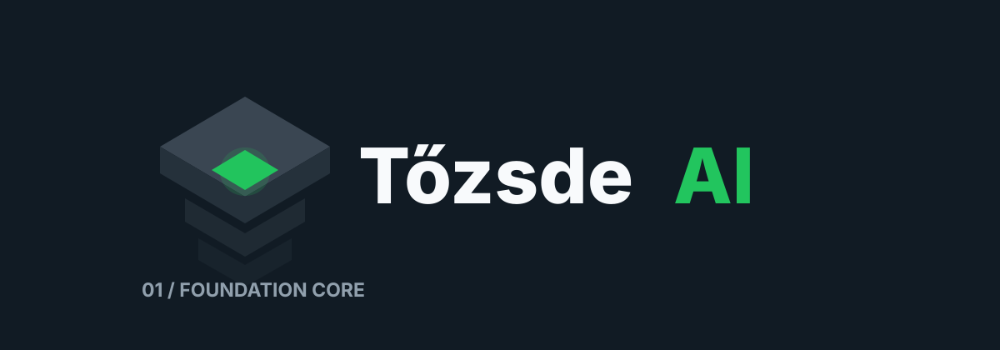
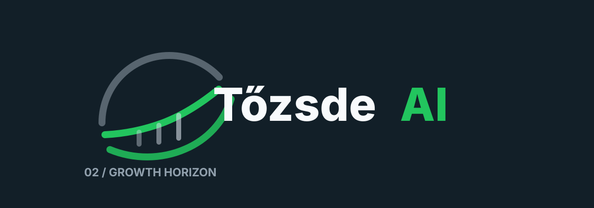
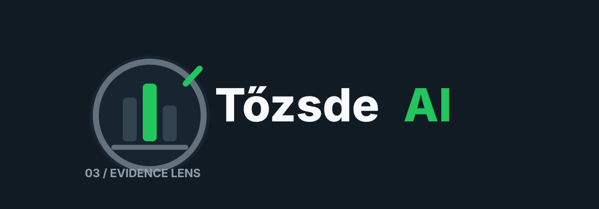
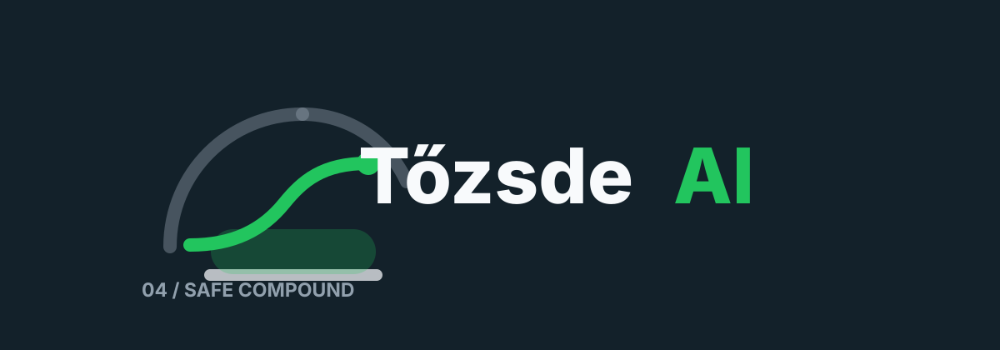
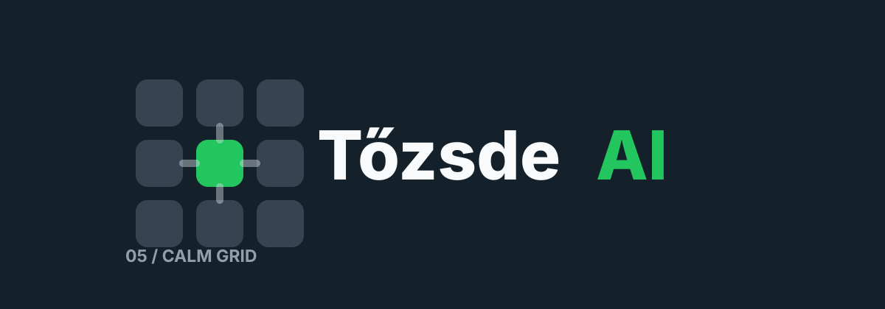
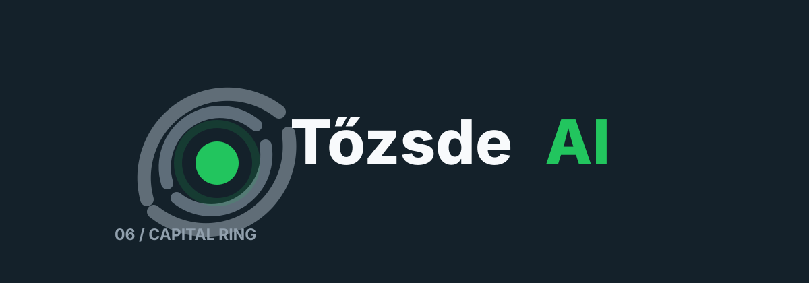
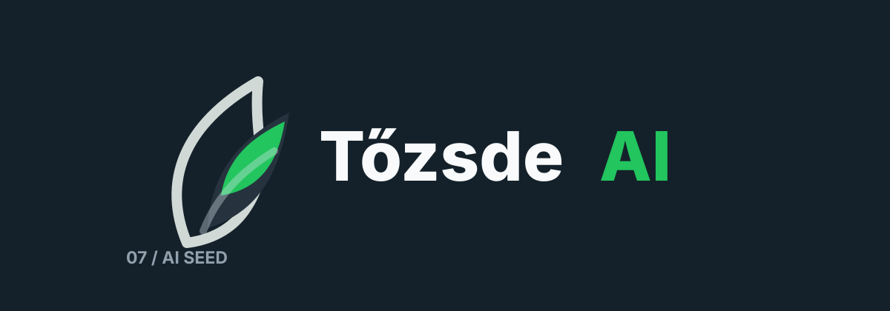
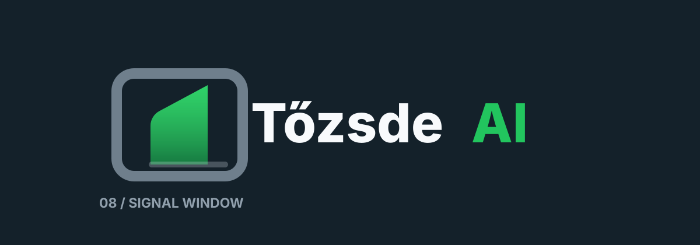
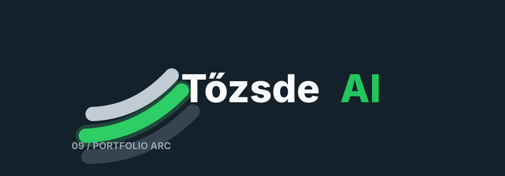
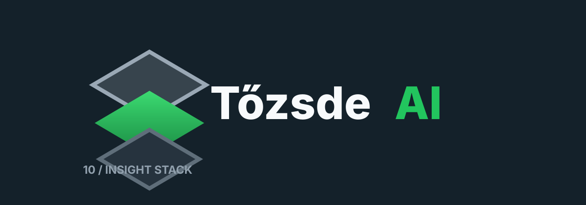

01 / Foundation Core
Stabil alap, AI-mag, biztonságos portfólióépítés.

02 / Growth Horizon
Nyugodt növekedési ív, adatvezérelt befektetési út.

03 / Evidence Lens
Információalapú döntés, kutatás, AI által kiemelt jel.

04 / Safe Compound
Védett növekedési pálya, hosszabb távú sikerérzet.

05 / Calm Grid
Információs mátrix, középen az AI által megtalált jel.

06 / Capital Ring
Portfólióegyensúly, stabil tőkeallokáció, zöld AI-mag.

07 / AI Seed
Intelligens kamatos növekedés, organikusabb prémium irány.

08 / Signal Window
Tiszta befektetési ablak, zöld AI-jelként megjelenő döntési sík.

09 / Portfolio Arc
Stabil portfólióív, biztonságosabb növekedési érzet.

10 / Insight Stack
Rétegzett információ, középen az AI által kiemelt insight.